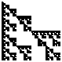
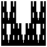
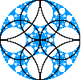
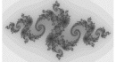
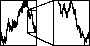

Here we survey more examples of self-similarity and its variations.
|  | Relatives of the gasket: rotating or reflecting pieces of the gasket can produce a remarkable variety of fractals. |
|
Naturalistic fractal forgeries: with rules only slightly more complicated than those used to build the gasket, we can construct reasonable forgeries of nature. Later we shall see much better fractal forgeries of natural scenes. |
|  | Self-affine fractals: scaling by different amounts in the x- and y-directions produces fractals that are self-affine, a generalization of self-similar fractals. |
|  | Circle inversion fracals: we generalize self-similarity to include nonlinear transformations: the amount of the scaling depends on the location. These examples are based on a type of geometry developed by Apollonius over 2200 years ago. |
| The Mandelbrot set: a different nonlinear transformation gives the most famous of all fractals. | |
|  | Julia sets: relatives of the Mandelbrot set. |
| We take a brief detour to clarify an issue about types of fractals. | |
|  | Statistical self-similarity: for a better model of natural phenomena, self-similarity and self-affinity can incorporate elements of randomness. |
|
Fractal landscapes: With more sophistication (and computing power), fractals can produce convincing forgeries of realistic scenes. These examples were generated by Ken Musgrave. |
|
Fractals in nature: after looking at so many geometrical and computer-generated examples, here is a short gallery of examples from Nature. |
| Fractal paints: how to make fractals with fingerpaints. |
Return to Introduction to fractals.